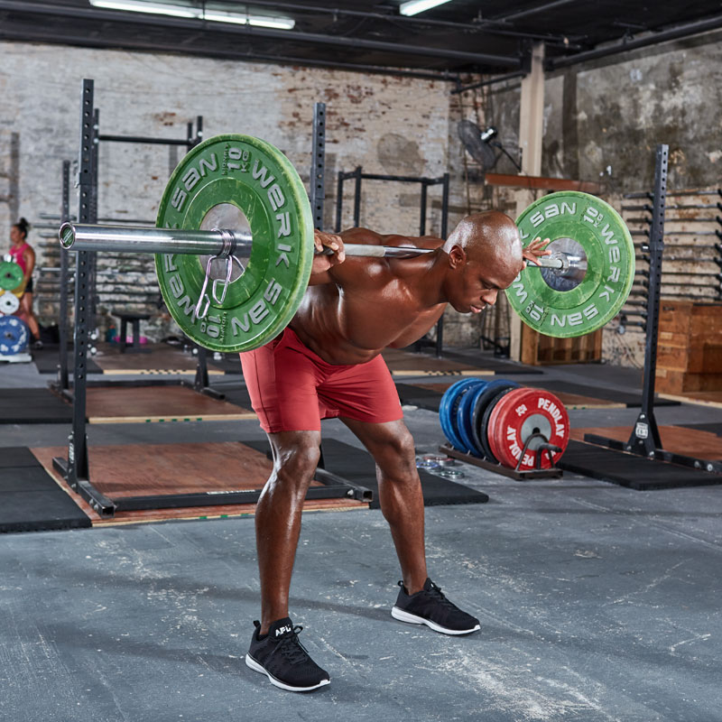
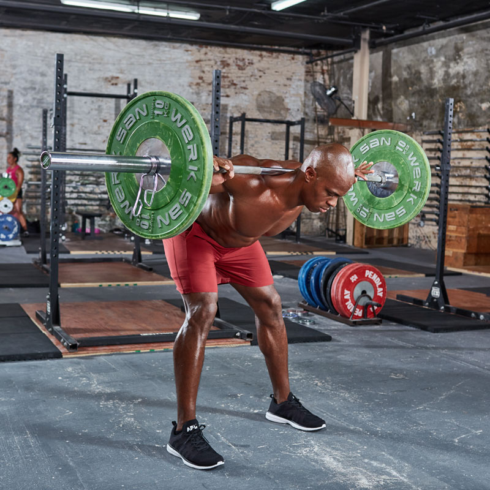

Legs 102

Squats
(6 sets | 15, 12, 10, 8, 6, 4-10)
Info: There will be 6 sets. Focus on control and depth. Each set, increase the weight 10-15% and decrease the repetitions. For the final set, after completing the initial repetitions, decrease the weight 25-40% and complete the remaining repetitions.
Form: Place your feet just outside of a normal standing position. Point your toes at about a 30 degree angle outward. With an arch in your back, sit back so that the bar travels in a straight line as you squat. Lower yourself all the way until your glutes nearly touch your ankles. Make sure that your heels do not come off the ground and that you stay flat footed. Push through your heels to bring yourself back upward.
Romanian Barbell Deadlifts
(4 sets | 12, 10, 10, 8)
Info: There will be 4 sets. Start with a weight you can focus on control. Increase the weight 10-15% every set.
Form: Stand with a neutral stance. Bend over at the hips with an arched back in order to pick up the bar. Lean back slightly with the legs but keep them at about an 80 degree angle. Using the hamstrings and glutes, bring the bar up until you are standing straight. Lower the bar back down to the floor.
 

Barbell Lunges X Barbell Good Mornings
(3 sets | 12x12, 10x10, 10x10)
Info: There will be 3 sets. Start with a weight you can focus on control for higher repetitions. Keep the weight constant throughout. Perform the barbell lunges first and the good mornings immediately after.
Form: For lunges, with a barbell on your back, take one step back so that you are able to lower yourself so that your back knee touches the ground. Step back far enough so that your shin stays straight. Using your quads, return yourself so that both feet are next to each other. Repeat on the other leg to complete one rep.
For good mornings, keep the barbell on your back. Lean forward, bending at the hips and keeping your legs at about an 80 degree angle, until your torso is about parallel with the ground. Keep your back arched and then return to the starting position.

Calf Raises
(4 sets | 15, 15, 12, 12)
Info: There will be 5 sets. Start with a weight you can focus on control for higher repetitions. After 3 sets, increase the weight 15-20% and lower the repetitions for the remaining 2 sets.
Form: Standing on an elevated surface so that your heels are hanging off the step, lower your heels so that it stretches the calves. Flex your calves and move so that you’re standing on your tippy-toes to contract the calves. Lower yourself slowly back to the starting position.